Paper Reading 1 - Intersection Prediction for Accelerated GPU Ray Tracing
Tor Aamodt在个人主页中描述了研究Graphics Hardware的动机。此外，在Publication页面分享了本文的code和video。
ABSTRACT
多年来，ray tracing被用于制作逼真的电影图像，而更快的raster-based基于光栅化的着色技术一直是视频游戏的首选，以满足实时需求。然而，最近的GPUs集成了为光追设计的硬件加速器单元。这些加速器单元针对遍历层次化树状数据结构的过程，这种树状结构用于测试ray-object intersection光线和物体是否相交。在这种数据结构中，朝着相似路径的不同光线会执行很多冗余的ray-box intersection光-盒相交测试。我们提出了一种ray intersection predictor光线相交预测器，在此过程中可以推测性地省略冗余操作，并直接测试光线可能相交的原始物体。我们的predictor的一个关键点是包含了identifying hash function识别哈希函数，这些函数能够保留足够的空间信息，以识别冗余的遍历操作。我们将探讨如何将光线预测策略集成到现有的GPU管线上，并通过预测树上更高层次的节点（靠近根节点的节点）以及更低成本的更谨慎的方式重新组合和调度遍历操作，来提高predictor的效率。在搭载光追加速器单元的移动类GPU上，每个streaming multiprocessor流处理器增加一个5.5KB的预测器后，对于ambient occlusion环境光遮蔽工作负载，geometric mean几何平均提高了26%。
INTRODUCTION
实时光追有望改变视频游戏的格局。拥有硬件加速的光追功能的GPU使开发者能在计算预算内实现更令人信服的视觉效果。光追通过物理准确的渲染算法产生逼真的图像。常见的Whitted-style光追将光模拟为从相机发出并与环境进行交互的光线。这些光线穿过场景，并在与物体和光源相交时积累颜色。因此，光追可以呈现出光栅化无法实现的视觉效果。例如，光栅化会忽略相机中不可见的物体，因此无法跟踪被忽略对象的间接照明效果。
光追具有丰富的parallelism并行性1，非常适合Single Instruction Multiple Data单指令多数据2（SIMD）执行。现代光追使用acceleration structures加速结构(AS)，例如the Bounding Volume Hierarchy包围体层次结构3（BVM），来组织场景数据以提高搜索光线相交的效率。对于每条光线，都必须执行AS遍历，而光线在场景中的随机散射会导致光线的相交点变得不一致，即相交的物体可能相距较远。因此，简单的光追实现在power功耗和memory utilization内存利用方面效率都不高。例如，不一致的光线会导致计算开销和内存分散，尤其是在SIMD架构中。这些不一致还会对内存层次结构造成压力，争夺内存带宽4并导致缓存缓冲5。然而，就是不一致的光线产生了最令人印象深刻的视觉效果，从而在视觉质量和计算负载之间产生竞争。
Ambient Occlusion环境光遮挡（AO）是其中一个受益于光追加速的效果。AO raysAO光线也被称为occlusion rays遮挡光线6，用于测试是否与任何物体相交，而不需要找到最近的相交点。遮挡光线很常见且对性能至关重要。这在现代光追API中支持跳过最近最近命中着色器执行功能中得到证明。基础渲染可以通过光栅化高效执行，然后通过光追来增强以保持实时性能。许多商业游戏都通过光追拓展现有的光栅化方法；硬件也应该模拟这种组合。
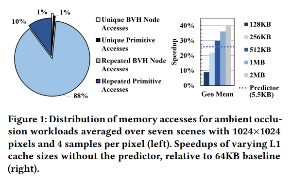
AO的工作负载具有高计算需求，因为每个像素点都必须使用多条光线进行采样。此外，AO光线通常很短并且在他们访问的AS中存在显著的冗余。Figure 1展示了在AO的工作负载中，对于每个单独的光线，内存访问类型的分布情况，且这个分布是在七个场景下求平均得到的。Figure 1(left)中Repeated BVM Node Accesses占比88%。由于他们不参与最终光线的相交计算，因此有机会通过预测遍历并跳过他们来提高性能。简单地使用缓存来加速计算是不够的，为了实现类似Figure 1(right)看到的相似的加速效果，需要一个非常大的缓存结构，因为AO计算所需的working set很大。
之前的研究通过专用的硬件加速器来加速光追中的AS遍历和光线相交测试。然而这些加速器都是作为独立的加速器设计的，他们与GPU互相孤立。另一个研究领域探索了通过减少光线不一致或者创造更适合GPU的SIMD特性的optimized AS来高效利用GPU硬件的方法。然而，目前的光追性能仍不足以实现3A游戏的实时渲染。
我们提出了一种光线相交预测器，已利用遮挡光线遍历时的冗余和提高内存层次结构的利用。与以前在光栅图形学中帧间缓存不同，我们的预测器专注于当前帧中的冗余。我们利用了AO的特性，他们只在意是否相交而非最近的相交。预测器使用之前相似光线的AS遍历结果来进行预测，通过哈希来确定相似光线。成功的预测可能会直接找到叶子节点、跳过整个遍历过程。错误的预测可能会从根节点从更新开始。在预测后，我们提出的预测器对当前正在遍历AS的warps7线程束进行重新打包，以提高SIMT8的效率。
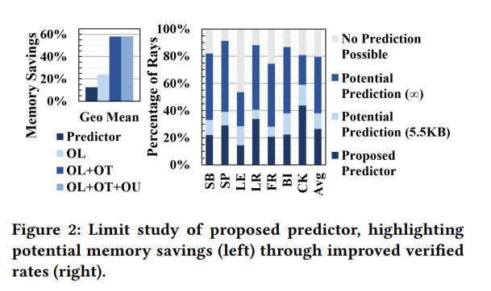
Figure 2展示了限制性研究的结果，评估了光线预测的潜力（详见6.3节）。结果显示，使用一个容量为5.5KB的预测器，可以预测38%的光线，这个预测器被理想化为只能执行oracle lookups神谕式的查找，即始终能够识别光线与表中条目的交点，如果这个交点存在的话（Potential Prediction(5.5KB)）。相比之下，我们提出的可实现的5.5KB的光线预测器（详见第4节）实现了26%的加速并且能够识别27%的光线相交(Proposed Predictor)。
为了评估我们的预测器，我们建立了一个基准的光追单元，用于加速在现代GPU中进行的光追，类似于NVIDIA RT Core。我们展示了我们的光追单元在独立运行时的周期级模拟结果与NVIDIA RT Core的性能之间的相关性。建模带有光追单元的GPU可以支持实现光栅化和光追的实际工作负载。我们的模拟器可以在github上获得，地址为https://github.com/ubc-aamodt-group/ray-intersection-predictor 。
本文贡献如下：
- 我们提出并评估了
a ray intersection predictor module，它在BVH树遍历的过程中，预测性的跳过了一些ray-box intersection，直接访问AS中深层的节点。 - 我们在预测器中引入了
warp线程束重新打包的拓展，目标是使得线程束内部的线程有类似的工作分配，即在执行完成时的工作量相似，并创建内存访问合并的机会。 - 我们在周期级
GPU模拟器GPGPU-sim中建模了详细的基准光追单元，并于NVIDIA RTX 2080Ti进行了相关性分析。
第2节介绍了光追的相关背景信息。第3、4节描述了我们提出的光线相交预测器。第5节详细介绍了我们的方法，包括基准光追单元的描述，随后在第6节给出实验结果，在第7节介绍了相关工作。
Notes:
- “光追具有丰富的并行性”是因为在光追算法中，每条光线的计算是互相独立的，没有依赖关系，这意味着可以同时处理多条光线。
- “单指令多数据”是一种并行计算模型，它是指一条指令同时作用于多个数据元素。在这种模型中，多个处理单元同时执行相同的指令，但每个处理单元的数据可以是不同的。
- “包围体层次结构”是一种树状结构，以提高光线和物体相交计算的效率。思路是将场景中的物体组织成了一系列的层次结构。具体来说，它采用了分治的想法，将场景递归地划分为了一系列
Bounding Volume包围体，每个包围体是一个Bounding Box边界盒，它包含了场景中的若干物体。我们可以先测试光线是否与包围体是否相交：如果不相交，就跳过这个包围体内部所有的物体，从而节省了计算时间；如果相交，就进入这个包围体的子包围体重复以上步骤。 - “争夺内存带宽”：内存带宽是指计算机系统在单个时间点能从内存读取或者写入数据的能力，当多个光线同时请求读取或者写入数据时，会产生竞争，降低内存访问效率。
- “缓存缓冲”：缓存是位于CPU和主内存之间的高速存储器，用于加速数据的访问。当不一致的光线访问的数据不在缓存中时，将频繁地将数据加载到缓存中，从而导致缓存缓冲。
- “遮挡光线”：这种光线并不关心找到最近的交点，而是测试光线是否与任何物体相交。它们用于确定场景中的阴影强度，即在某个点周围的环境中，有多少光线被遮挡，从而影响该点的明暗程度。
- “warps”: 线程束是一组并行执行的线程。在
GPU中，线程被组织成一组线程束，并且这些线程在同一时间周期内执行相同的指令。引入线程束的目的是为了在GPU中实现高效的并行计算和资源管理，以便更好地利用硬件资源并提供更高的性能。 - “SIMT”: Single Instruction, Multiple Threads. 是一种并行计算模型。在这种模型中多个线程执行相同的指令，但是可能处理不同的数据。
BACKGROUND & MOTIVATION
本节概述了GPU架构和光追。我们通过描述ray traced ambient occlusion光追环境光遮挡面临的挑战来阐述我们研究预测器的动机。
GPU Architecture
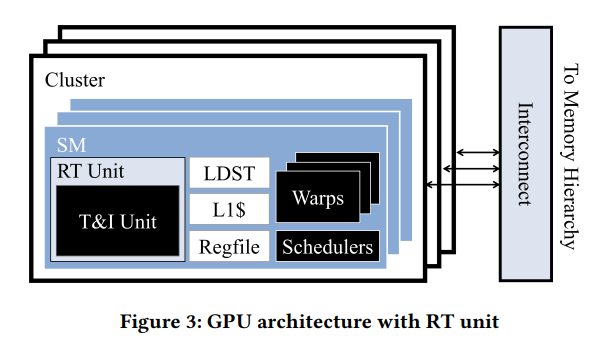
GPU是由许多streaming multiprocessors流式多处理器（SMs）组成的大规模并行处理器。Figure 3显示多个warps线程束可以在一个单独的SM上执行。每个线程束由32个线程组成，这些线程以lockstep锁步或者SIMT单指令多线程的方式执行。Warp schedulers线程束调度器在SM中分发线程束，以及与内存相关的单元，例如load/store unit加载/存储单元（LDST），L1 cache/shared memoryL1缓存/共享内存和register file寄存器文件。多个SM组成了一个cluster集群，每个cluster通过interconnect连接到memory hierachy内存层次结构。
RT Cores是NVIDIA GPUs中用于光追的专用单元，但NVIDIA并未提供其实现细节。因此，本文中建模了我们自己的光追加速器，称为RT unit，详见5.1节。
Ray Tracing
光追通过追踪场景中的光线来模拟全局光照效果，每pixel像素追踪的光线数和图像中的像素数量决定了渲染质量。例如对于一个1024*1024的图像，每个像素四个ray samples per pixel光线样本（SSP），需要追踪超过四百万条光线。一个简单的实现需要进行超过一万亿次相交测试才能渲染像Crytek Sponza这样有242K个三角形的场景。因此，primitives原始物体们通常被组织成Acceleration structure加速结构（AS），详见2.4节。光线遍历AS以优化相交测试。对于实时光追应用，一种高效的硬件实现AS遍历至关重要。
光线在数学上被描述为具有起点，方向和长度的射线，表示为AS中是逐个遍历的，但是具有相似origins起点（o）和directions方向（d）在AS中走的路径相似。对于这些光线，我们可以记忆遍历过程，并且优化帧中未来的光线。这种记忆化可以使得occlusion rays遮挡光线（如AO和shadow rays）受益，因为一旦找到一个第一个交点，搜索就会终止，就有可能跳过整个遍历过程。
Ambient Occlusion
Ambient lighting环境光照是场景中基本水平的照明，通常情况下被艺术家们近似地设定为一个常量值。Ambient occlusion环境光遮挡是一种视觉效果，其中crevices罅隙/凹槽会因为接受较少的环境光而显得暗。在光追过程中，为了计算环境光遮挡，会追踪许多短光线，这些光线从感兴趣的点（通常是场景中的某个表面点）出发，覆盖一个半球面。与其他光线不同，环境遮挡光线不需要最近的交点。在AO计算中，任何ray-object intersection都意味着该点的一些环境光被遮挡了。与物体相交的光线比例代表了被遮挡的环境光的数量。
这种全局环境光遮挡无法在基于光栅化的图形学中准确实现，因为它需要全局信息。相反，screen-space AO屏幕空间环境光遮挡在基于光栅化的图形学中可用，但因为采样在物体后面或者在屏幕之外等基本问题会导致结果较差。在光追中，全局AO的计算成本高，因为需要计算大量光线才能达到高质量的结果。
Ray Traversal Algorithm
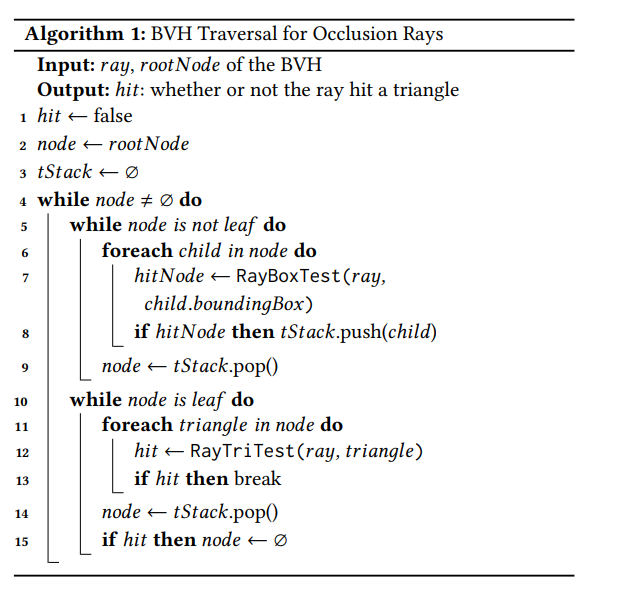
AS可以减少寻找交点所需的ray-primitive test次数，Bounding Volume Hierarchy包围体层次结构（BVH）是当前光追使用的标准AS。BVM树通过将primitives包含在叶子节点中，并递归地用较大的axis-aligned bounding boxes轴对齐包围盒（AABBs）包围低层次的AABBs。如果一条光线没有与某个非叶子节点相交，那它也不会与这个非叶子节点的子节点相交。这种属性将焦点测试的时间复杂度从线性降低到对数的，使得BVH对实时光追的性能至关重要。
BVH遍历算法在软件中的实现是一个while-while循环，在Algorithm 1中描述了其用于遮挡光线的情况。外层while循环迭代直到光线完成遍历。内层while对BVH进行depth-first traversal深度优先遍历。深度优先遍历通常需要使用每个线程的traversal stack遍历栈（tStack），或者针对二叉树可能使用bit trail。如果第一个内层while达到叶子节点，那么第二个内部while循环将测试光线与primitives的相交。遍历将继续，知道所有的光线与primitives的相交点都被识别，或者对于遮挡光线而言，只需要找到任意相交。如果没有ray-primitive intersection出现，我们认为光线与场景没有相交。更多的光追背景知识，推荐去看Ray Tracing in One Weekend。
为了在遍历过程中提高效率，光线首先访问距离光线起点较近的子节点。然而，由于子节点可能重叠，所以第一个相交点可能并不是最近的相交点（注：例如两个primitive非常接近或者部分重叠时，当光线遍历BVH时，如果子节点的边界体积重叠，光线可能会与其中一个相交，但这不意味着这个节点就是最近的相交点）。因此，每个ray-primitive intersection只是一个候选节点，要确定实际最近的相交点，必须识别出所有的候选点。幸运的是，BVH树可以使用平衡节点实现，并且具有可预测的内存使用情况。出于这个原因，我们选择使用BVH树，并且它在现实中被广泛应用，正如OptiX所见。
NVIDIA RT Core密切遵循while-while算法。它具备一个traversal unit遍历单元（包含Box intersection Evaluators包围盒相交评估器）和一个intersection unit相交单元（包含Triangle intersection Evaluators原始物体相交评估器）。RT Core首先从SM进行光线查询并触发遍历过程。RT Core从内存提取并解码BVH节点，并反复执行适当的相交测试，直到找到最近的相交点或者确认光线未与任何物体相交。然后将结果返回给SM进行后续处理和着色。
Accelerating Ray Tracing
反射光线通常是不一致的，因为他们在随机方向上反射。他们访问AS中的不同节点和部分，导致内存分散和GPU上低SIMT效率。以前的研究尝试把这些光线组织成更有条理的数据集合；然而他们并没有解决高内存和计算延迟问题，这是低效率的主要原因。我们的解决方案是跳过相似光线的AS遍历以降低总延迟，同时还可以将这些技术结合起来解决分散问题。
我们的预测器类似于virtual address translation虚拟地址转换和page-table walking页表遍历。光线遍历AS的过程和地址转换遍历页表1的方式类似。具体来说，存储之前光线遍历结果的predictor table预测器表，类似于存储之前虚拟地址到物理地址转换的TLB2。pointer cache指针缓存类似地存储了指针解引用3。然而，与TLB和pointer cache不同的是，我们不会再次遇到一个完全相同的光线，因此除了进行预测外，我们无法复用存储的结果。数百万个光线中的每一个光线可能都是完全独立的，而我们的哈希方案试图在相似的光线中建立冲突，就像constructing aliasing一样。当成功预测相似光线的相交点时，我们跳过该光线的其余遍历部分，以此减少内存访问和计算量。
Notes:
- “地址转换遍历页表”：地址转换是指将虚拟地址（通常由程序生成）转换为物理地址（对应于实际内存中的位置）。这种转换通常涉及到一个称为页表的数据结构，它将虚拟页与物理页进行映射。
- “TLB”:
Translation Looksaside Buffer，转译后备缓冲，用于加速虚拟地址到物理地址的转换过程。它是一个高速缓存，存储了最近使用的虚拟地址到物理地址的映射。当程序访问某个虚拟地址时，会先查看TLB确认是否已存在该虚拟地址的映射信息。如果存在，就直接获取对应的物理地址从而加速访问；不存在，就从页表中获取映射信息，并存入TLB，以便加速未来的访问。 - “指针缓存”是一种优化机制，目标是加快内存中特定位置的多次访问。当程序多次访问同一个指针所指向的地址时，解引用过程（或者指针所指向的实际值或对象）可能会成为性能瓶颈，因为它设计内存访问和数据传输。指针缓存会存储之前解引用过的指针及其对应的值，以便在下次访问相同指针的时候可以直接从缓存中获取，避免了再次解引用和内存访问。
RAY INTERSRCTION PREDICTOR ALGORITHM
在本节中，我们将对光线相交预测其算法进行抽象描述，并说明它如何跳过遍历大部分BVH内部节点的过程。
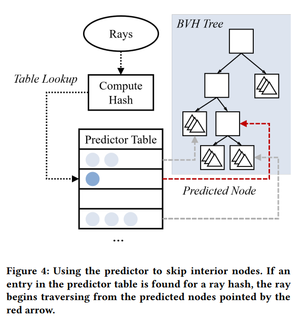
如Figure 4所示，在光线开始遍历BVH之前，我们首先计算它的hash值并在预测器表中查找。如果存在一个与哈希值对应的条目，将返回一个包含一个或多个预测节点的预测结果，以供进一步评估。光线从这些预测结果里的节点们开始遍历BVH，直到找出一个相交点。如果找到相交点，遍历完成，内部节点被成功跳过。否则，我们无法确定光线是否未与场景相交，或者仅仅是使用预测器时未能找到相交点。这种情况下，光线必须从根节点开始执行完整的遍历，就像没有预测器一样。如果找到一个相交点，预测其表更新对应的节点。我们可以预测内部节点和叶节点，详见4.3节。
首先，我们为预测器定义一些术语。光线hits击中表示它与场景相交，无关是否使用预测器。只有光线hit时才可能跳过BVH节点。光线predicted被预测是指在预测器表中找到了一项预测，光线verified被验证是指光线使用预测找到了交点，而mispredicted被误预测是指光线被预测了但没有被验证。一个好的预测器应该能够验证许多光线，但被验证光线的比例受到被预测和击中光线比例的限制。
我们通过以下方式估算预测器跳过的BVH节点数量。设predicted和verified所有光线的百分比。另外，一个光线在完整遍历过程中平均需要获取
的光线未被预测，需要遍历 个节点。 的光线被验证，需要遍历 个节点。 的光线未被误预测，需要遍历预测节点和完整遍历 个节点，总共需要遍历 个节点。
综上，平均一个光线需要遍历的节点数
因此，跳过的节点数量为：
Equation 1展示了一个直观的结果，即跳过的节点数等于被验证光线减去评估预测节点的开销。因此，跳过的节点数通过具有较高的验证率
PROPOSED ARCHITECTURE
本节概述了预测光线交点所面临的挑战，以及我们提出的硬件预测器是如何克服他们的。我们描述了predictor table architecture预测器表的架构和hashing schemes哈希方案，然后讨论了如何通过Go Up Level支持预测内部节点。由于预测器的误预测可能会导致遍历算法的分歧/分散，因为我们还讨论了如何通过warp repacking来减轻这种影响。
Predictor Table Architecture
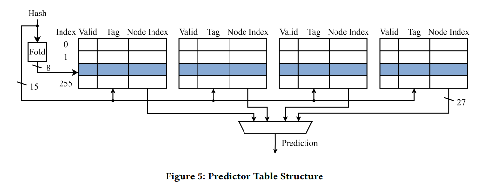
每个SM上都有一个预测器表，其结构如Figure 5所示，用于存储节点预测。set-associative way关联组1的每一行都是一个预测器条目，其中包含valid bit有效位，ray hash tag光线哈希标记，一个或多个用于存储预测节点（一个偏移量，指向BVH树缓冲区内的位置）的slots插槽。预测器包含了同一帧内之前遇到的光线的条目。鉴于经典的光线生成着色器使用伪随机数选择光线方向，同一帧中的两个不太可能完全相同。为了确定预测器表中的哪个条目适合当前的新光线，我们使用哈希算法进行标识。当访问预测器时，光线参数会被哈希处理，得到的哈希模式将用于预测器的查找。这个哈希模式被用来索引预测器表，并与选定的行中的tag进行比较。如果找到tag匹配，则认为该光线被预测，并返回相应的节点地址进行验证。正如前文提到，验证光线涉及从预测节点开始BVH树。在这个验证步骤中，使用完整精度的光线参数进行相交测试（而不是哈希值）。
根据哈希函数的不同，用于哈希的位数bitwise-xor按位异或进行组合成gshare branch predictor。
虽然Figure 5中的光线相交预测器的结构在表面上看起来类似于缓存，但预测其表中存储的是地址，而不是节点数据。与BTB2或者更复杂的branch target predictor分支目标预测器不同，光线相交预测器存储的地址是BVH树节点的地址，而不是指令的地址。与TLB不同，即使在光线相交预测其中包含光线相交节点的条目，光线的查找也不能保证会找到匹配的条目。
我们在第6节中比较了不同的预测器表参数，并发现使用一个4路组相联的预测器表，共有1024个条目，每个条目包含一个节点，标签使用15位时，表现最佳。正如Equation 1中所示，虽然增加每个条目中的节点数可以提高验证通过的光线数量，但每个光线也必须评估更多的节点。
当每个条目使用多个节点时，需要一个节点替换策略来清除条目中的预测。我们用27位来索引节点，这足以管理一棵具有BVH树（约134百万个）或者至少有6700万个triangles的场景（这个数字是在最坏情况下进行估算的，即一个完美的二叉树，每个叶子节点上只有一个triangle）。这个选择对于现代商业游戏来说是足够的，例如《使命召唤》每帧用了2400万个triangles。
由于每个warp中有32条光线，因此每个周期内可能有至多32个线程尝试对预测表进行查找或更新。保持32个访问端口到我们的预测器表是不现实的，所以我们为预测器查找维护了一个FIFO队列，并为预测器更新维护一个单独的队列。我们经实验法线用4个访问端口是理想的。内存系统不会被预测验证的突发请求淹没， 并且硬件区域受到合理的大小限制。即使在技术上可能实现32个访问端口，也不会提高性能。因为请求会在内存层次结构中形成瓶颈，预测器单元会保持空闲，直到下一个warp准备好进行访问。
Hashing
为了识别可以共享预测器条目的光线，我们探索了量化光线相似性的策略。直观地说，如果光线遍历了BVH的相似部分，这些光线就认为是相似的。离线光追的先前研究已经探索了如何通过对光线进行排序来提高缓存命中率。因为在遍历之前不能确定光线与哪些节点相交（即遍历到哪些节点），大多数光线排序技术将三维光线起点和二维光线方向组成排序键。我们相似地将光线的起点和方向编码为单个值，但不同于将其用于对光线进行排序，我们将其用于索引预测器表。我们的目标是对于相似光线，最大化预测器表的碰撞；对于不同光线，最小化预测器碰撞。我们评估了两种不同的哈希函数。
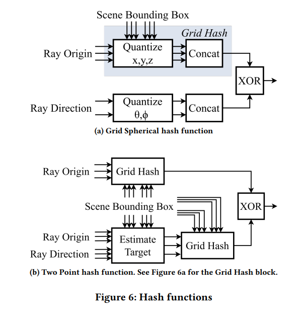
Grid Spherical
Figure 6a展示了Grid Spherical哈希函数。这个哈希函数将光线的起点和方向分别在笛卡尔坐标系和球面坐标系3中进行了量化，然后将他们进行了组合。光线的起点分量x, y, z 分别使用scene bounding box场景包围盒将其映射到整数范围extreme corners表示。然后，这些值被连接成单一值。我们将其称为Grid Hash block。相似的，光线的方向分量bitwise-xor进行组合。选择
Two point
Figure 6b展示了Two Point哈希函数。该哈希函数基于Two point排序方法，它将光线的起点和一个估计的目标交点结合起来。光线的起点使用与Grid Spherical相同的方法进行哈希。估计的目标交点用Grid Hash block进行哈希，并与哈希过的起点进行xor操作。
我们发现使用Grid Spherical哈希函数比使用Two point哈希函数产生稍微更好的结果。我们使用一个5位的起点位和一个3位的方向位，得到一个15位的光线哈希。
上述的两个哈希函数是通过实验验证来进行选择的可能并未达到最优。我们将探索其他哈希函数，以及更复杂的哈希技术，例如组合多个哈希函数或者自适应的选择使用的位数，留给未来的工作。
Go Up Level
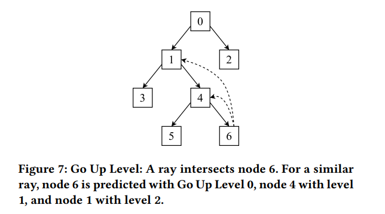
即使是非常相似的光线，也可能与不同的primitives原始物体相交。我们观察到这些光线通常会与不同的叶子节点相交，但会与这些叶子节点的相似祖先节点相交。在此启发下，我们引入了Go Up Level：不预测叶子节点，而是预测覆盖更大空间的内部节点。我们将Go Up Level定义为与相交的primitives所在的叶子节点相对应的BVH Level。换言之，当Go Up Level为k时，叶子结点的第k个祖先节点被存储在预测表中，以便用于未来光线的预测。具体来说，当Go Up Level为0时，预测的是叶子节点本身；而对于Go Up Level为1或2时，预测的分别是父节点和祖父节点，如Figure 7所示。
随着Go Up Level的增加，验证光线的概率增加，因为略有不同的叶子节点可以共享同一个祖先节点。然而，这样一来，对于每个预测，光线都需要遍历更大的BVH区域来验证预测并找到交点。这在Equation 1中呈现出权衡；增加Go Up Level会增加v，也会增加m。我们发现Go Up Level为3的时候最有效。详见6.2.1小节。
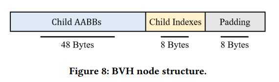
为了实现Go Up Level，叶子节点需要跟踪祖先节点，但是大多数BVH节点不存储父节点指针。或者，我们可以使用额外的栈内存来在遍历树时跟踪节点。由于我们使用的是Aila and Laine BVH tree，可以在构建BVH时预先计算每个节点的第k个祖先，而无需使用额外的栈内存或产生额外的内存访问，并将其存储在空的padded space中。Figure 8显示了Aila and Laine node的结构。这样，可以在节点访问时，可以同时获取祖先节点索引和子节点索引。
Warp Repacking
简单地实现预测器会导致SIMD执行中的不一致。因此，我们提出在预测之后对warps进行重组，以防止misprediction错误预测延迟整个warp的进度。与过去的warp重组方法不同，这种重组是在accelerator unit加速器单元4内部进行的，即在每个warp的单个复杂指令集执行期间进行，这可以避免影响其他硬件结构，如寄存器文件。
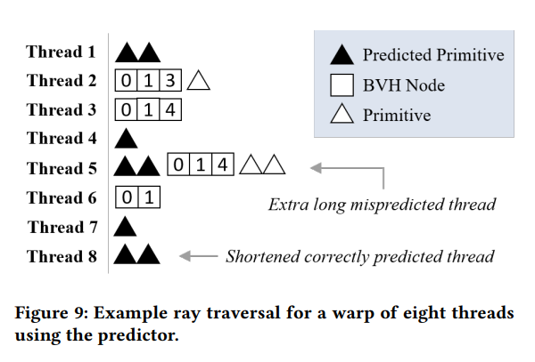
一个warp的执行时间取决于它的最慢线程。对于一个包含32个线程（32个光线）的warp，很可能至少有一个光线发生预测错误，这个光线需要执行完整的遍历和评估预测结果。Figure 9展示了一个包含8个光线的warp示例。这些光线在进行了预测表查询之后，从Figure 7中的'BVH树上进行遍历。预测可能包含带有一个或者多个primitives的叶子节点。线程5发生了预测错误，在执行常规的BVH遍历之前，对预测的primitives进行了相交测试。预测错误的光线需要访问的节点数比没有预测器的情况下要多，引入了long tail问题且演唱了warp的执行时间。其他的所有线程必须等待线程5完成，然后warp才能完成。在最后的遍历阶段，SIMT效率也会显著降低，因为只有发生预测错误的光线（线程5）还在执行。
有三种可能的结果：交点被正确预测（线程1、4、7、8），错误预测（线程5），根本没被预测（线程2、3、6）。理想情况下，我们应该将所有正确预测的光线放在一起，这样慢速线程就不会延迟整个warp的进程。未被预测的光线也应该被分组，以便它们可以继续从warp内部的内存合并中受益（减少内存访问的碎片化）。最后，被错误预测的光线应该被单独维护，避免延长warp的遍历时间。
尽管我们在测试预测的primitives之前无法区分正确的预测和错误的预测，但我们发现仅仅将被预测的光线和未被预测的光线区分开来就足以纠正问题行为。对于Figure 9中的示例，我们应该使线程1、4、5、7、8一组，线程2、3、6一组。原始的warp不再是满的，但是剩余的线程仍然可以从warp内部的内存合并中受益，并且通常在类似的时间范围内完成遍历。这一步骤对于预测器提供性能优势是必要的。结果和没有repacking的预测器进行比较详见6.2.2节。
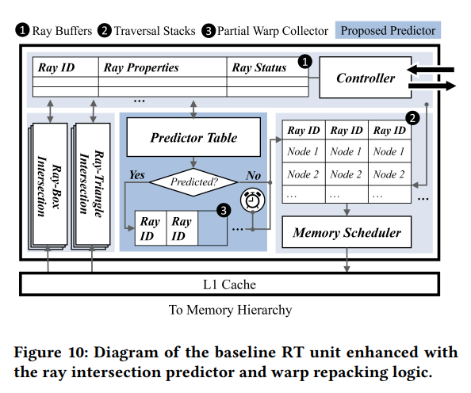
Implementation
我们在predictor unit里进行repacking。在线程完成预测器查找之后，被预测的光线被从warp中移除，而未被预测的光线被保留。被预测的光线会被排队到Figure 10所示的partial warp collector中。该结构仅存储被预测的光线的ID，直到collector中填满32个光线或者达到超时时间，然后这些光线会被排队等待进行遍历（组成新的warp）。 我们仅跟踪光线ID，因为与每条光线相关的其余数据存储在ray buffer中，由光线ID进行索引。collector的总大小占寄存器的0.2%，最多存储64个光线ID和一个5位的超时计数器。我们设置了短暂的超时时间，以确保在光线不足的时候能够及时处理。我们发现超时时间在5-30个cycle之间的取值没有明显的差异。我们允许最多存储64个光线ID，以便存储溢出的光线。例如，如果在超时之前，collector中有30个光线，在另一个warp添加了15个光线之后，collector中会有45个光线，直到有32个光线被移除并排队等待遍历。
在repacking的过程中，光线ID被移动在用于跟踪RT unit内warp进度的缓冲区之间。因为每个线程只跟踪一个光线，大部分关联数据已存储在5.1.1中描述的ray buffer中。在基准RT unit这个上下文中，重新打包这个步骤仅仅更新了线程索引到ray buffer中，同时避开了与寄存器文件对齐的复杂限制。其他的warp重组方法，例如Dynamic Warp Formation，Thread Block Compaction，Large Warps要求线程在洗牌到不同warp之后仍然保持在其各自的lane中，但对于这里提出的预测器而言，是不必要的。预测器repacking的过程仅在RT unit内持续存在，因此在后续的指令中不需要移动架构可见的寄存器值（repacking只在RT unit内部进行，不必考虑对整个架构的影响）。我们假设线程在遍历过程中是随意组合成warp的，这种组合不会影响未来的着色指令，因为所有的结果都是基于ID存储的。
Additional Warps
由于repacking之后，warp的利用率降低，因此应该有足够的资源来支撑光追单元中additional warp额外的线程束。我们可以增加同时执行的warp的数量限制。为了确保RT unit不被压垮，在RT unit满的时候，只有新创建的warp才能继续派遣（因为repacking后的warp已经解决了long tail问题，具有更低概率使线程束被拖延，选择新创建的warp可以保持光追单元的高效利用）。只要有超过32个ray buffer slots可用，就可以调度一个新创建的warp。虽然这不像repacking这一步那样重要，但额外增加warp的好处详见6.2.2节。
Hardware Implementation
Figure 10总结了基准RT unit（将在5.1中详细介绍），并增加了预测器。ray buffer光线缓冲区存储了光线ID，光线属性，光线状态（当前遍历阶段）等信息，用于存储RT unit中的光线。为每个光线分配一个Traversal Stack来跟踪下一步访问。任何新的光线都将被调度执行一个基于光线属性计算的哈希的预测器表查找。如果查找成功并得到一个预测结果，预测节点将被送到光线遍历栈的栈顶。否则，光线就按照正常流程进行遍历（从root开始遍历）。
Notes:
- “关联组”是一种缓存中管理数据的方式。在这种映射方式下，缓存被划分为多个
set组，每个组包含多个cache lines缓存行。每个缓存行可以存储一个数据块。 - “BTB”: Branch Target Buffer, 一种高速缓存。它用于存储分支指令的目标地址，以便在程序执行时更快的预测和处理分支操作。
BTB通常与分支目标预测其一起使用，分支目标预测器会尝试预测分支指令的下一条指令是否会被执行，以便提前加载相关的指令和数据。 - “球面坐标系”：Spherical Coordinate System，一种用来描述三维空间中点的坐标系统，它使用两个角度和一个距离来确定一个点的位置。
- 极径（r）：表示点与坐标原点（通常是球心）之间的距离。
- 极角（
）：是从正上方（z轴正方向）向下测量的角度，范围通常为 。 - 方位角（
）：是从某个参考方向（通常是x轴正方向） 开始逆时针测量的角度，范围通常为 。
- “加速器单元” ：Accelerator unit，它是一种硬件组件，旨在通过专门优化的电路和指令集来执行特定类型的任务，以提高计算性能。
METHODOLOGY
本节描述了用于光线交点预测器的模拟器和模拟设置。我们对GPUPU-Sim 4.0.1进行拓展，以模拟类似NVIDIA's RT Core，作为我们的baseline，如5.1节所述。我们没有模拟完整的图形流水线，因为我们的预测器只涉及光追部分。在混合渲染中，光追AO通常在传统的光栅化之后进行，并使用混合技术进行合并。5.2节中描述了光追的benchmark，光线生成过程，以及模拟器配置。
对于energy analysis，我们使用GPUWattch来估算GPU中的能量变化，包括cache和DRAM访问。我们使用CACTI7来模拟其余主要组件，该工具使用45nm process。Figure 10中的predictor table预测器表，traversal stacks遍历栈，ray buffer光线缓冲区，partial warp collector都被建模为SRAMs1，其开销是根据access energy进行保守估计的。warp repacking的energy包含partial warp collector和 additional accesses to the ray buffer。我们保守地估算intersection units，将其视为加法器和乘法器，并假设所有其他控制元素的能量开销较小。
Ray Tracing Unit
“magic”指令被认为是实现效能计算的解决方案，它可以执行数百个操作并与自定义存储单元进行交互。在光追背景下，整个traversal and intersection遍历和相交过程会被视为一个单一的__traceray()指令，就像NVIDIA RT Core的Ray Query一样。对于我们的baseline architecture，我们模拟了一个RT unit光追单元，包含一个traversal block和类似于NVIDIA RT Core的ray-triangle intersection block。RT unit通过特殊的__traceray()指令进行访问，该指令传递所有必要的光线数据和AS的根节点。这个指令会被从正常的GPU执行中截取，然后被重定向到RT unit中执行，并且结果被写回GPU。这样就可以使得光追操作在专门的RT单元中执行，而不是正常的GPU中执行。
RT unit被设置为一个具有可变延迟的函数单元2，类似GPU中得LDST unit3加载存储单元。对于Algorithm 1的每次迭代，RT unit会获取相关的包围体或者primitives。RT单元和LDST单元复用4，用于访问L1 cache和其余的内存层次结构。
Interface
我们的CUDA光追内核的每个线程追踪一条光线。光线数据通过线程ID进行检索，包括起点、方向和定义光线长度的参数t。这些数据以及BVH的根节点被传递到RT unit中，用于每个线程。RT unit将数据存储到ray buffer中，由光线ID索引，同时通过控制器中的计数器来跟踪warp的完成情况。RT unit同时执行至多8个warp，因此ray buffer中最多存储
Traversal Unit
每次接收到新的__traceray()命令时，都会触发控制器初始化一个遍历栈。我们将遍历栈配置为最多可以容纳8个条目，这对于许多遍历都足够了，偶尔会溢出到线程本地内存中。遍历从根节点开始，然后对BVH进行深搜，将未访问的节点推入遍历栈。
在RT unit中可能同时存在多个warps，因此内存调度器必须在调度内存请求时选择优先考虑哪一个。受到greedy-then-oldest调度策略的启发，我们优先考虑一个给定的warp，直到这个warp中所有的线程都在等待内存请求后再考虑下一个warp。内存调度器首先选择一个warp，然后使用一个FIFO队列来选择下一个要访问的节点。如果同一个warp中的不同光线需要访问相同的节点，那么这些相同节点会被合并成一个单独的内存请求，类似于MSHR多级缓存命中缓冲区的工作方式。这在遍历过程的早期特别重要，因为大多数光线都会访问相同的节点（例如根节点）。在每次迭代中，接下来的节点从遍历栈中弹出，按照线程顺序从L1 cache中请求，并在ray buffer中找到对应的光线进行计算。
数据返回时（从内存中拿到节点数据时），节点会被广播到光线缓冲区。任何匹配的条目（因为之前不同光线请求相同节点时合并了，要让这些光线都得到节点数据）都会触发相交测试，光线和节点数据会被传到intersection unit里进行计算。控制器会根据相交测试的结果更新光线的状态和warp追踪计数器。当这些计数器显示一个warp已经完成计算时，控制器会释放遍历栈并发出warp完成信号。
Intersection Unit
Intersection unit加速了两种类型的相交测试，即遍历BVH节点时的ray-box test和到达叶子节点后的ray-triangle test。我们的模型基于T&I engine的遍历和相交单元，使用了一个两阶段流水线化的ray triangle test和一组简单的加法器、乘法器和比较器用于ray-box test。每种测试类型都有32个流水线硬件单元，以便一个线程束中所有32个线程可以并行计算光线相交。由于内存调度器每次只处理一个线程束的请求，因此不需要（为多个线程束建立）输入队列。在每个周期中，光线和节点数据被转发，控制器会根据数据类型通知对应的相交单元执行计算。一旦流水线相交测试完成，输出通过ray buffer返回，控制器相应地更新光线状态。如果需要，下一个节点将被推入遍历栈。
Memory Interface
来自RT unit的内存请求被发送到L1 cache，然后连接到剩余的内存层次结构。由于通常没有其他竞争的指令，L1 cache通常足够管理光追的内存请求。我们使用了一个64kb的L1 cache，并在6.2.3中讨论了其他可能的配置，比如专用的RT cache。
Latency
RT unit中的每个元素都会对整体遍历延时产生影响。最小的遍历延时需要一个周期用于排队，两个周期用于访问表，一个周期用于访问L1 cache，以及两个周期用于相交测试。这个延迟会因为预测结果、遍历长度以及内存访问延迟而不同。详见6.2.4。
Correlation
尽管RT unit具有类似NVIDIA RT Core的遍历单元和相交单元，但是我们无法确认相似之处。关键因素，如多个光线在NVIDIA RT Core中如何共存，内存请求如何调度以及如何维护光线数据，NVIDIA并未透露。因此，我们并不试图完全模拟RT Core，而是做一个类似的，泛化的RT unit。
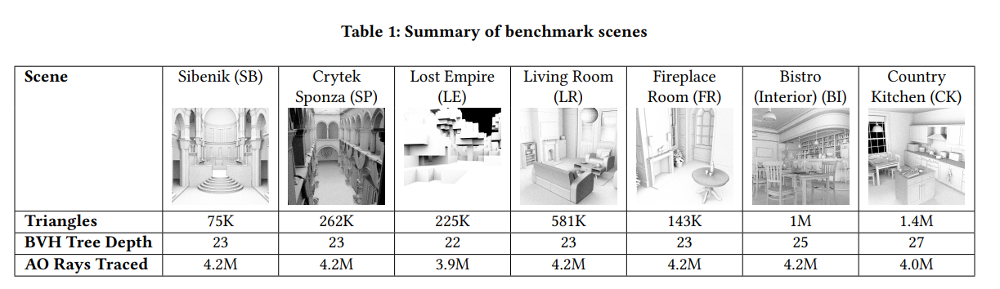
我们在RT unit上模拟了一些常见的benchmark场景中的主光线和反射光线，这些场景在Table 1中。
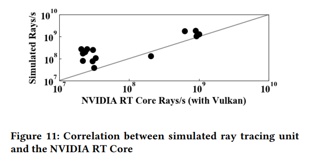
我们将这与NVIDIA RTX 2080Ti GPU上的基本Vulkan实现进行了比较，该实现也涉及主光线和反射光线。我们对比了具有类似光线数量的相同基准场景。Figure 11显示了这两者之间的光线/秒的相关性。
我们使相关系数高达0.9，但测试样本小，而且这两种方法并不完全相同。我们将我们的基准与高端的NVIDIA GPU进行了验证，因为这是目前唯一具有光追功能的消费级GPU。然而，我们的设计针对的是移动GPU，目标是加速在更具挑战的移动环境中的光追。
Simulation
基于基准的RT unit，我们对提出的光线相交预测器进行建模，并通过将结果与基准进行比较来评估其有效性。我们选择了7个常见的场景作为benchmarks，在Table 1中展示。每个场景生成约四百万个AO光线，方法是首先为1024*1024的viewport中的每个像素计算主射线击中点，然后通过对击中点周围的上半球进行随机余弦采样，为每个击中点创建4个AO光线。这些光线的长度是场景包围盒对角线长度的25%-40%，以表示可能阻挡环境光的附近区域。我们通过使用Aila and Laine Morton顺序快速排序算法对光线进行排序，比较光线排序的效果。我们在GPGPU-sim中模拟了这些光线，使用RT unit和预测器进行交点测试。
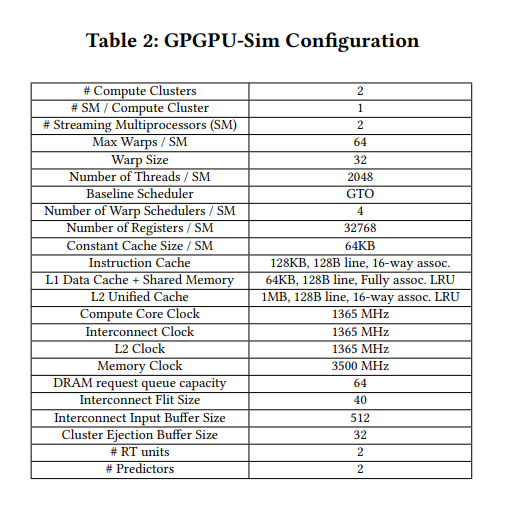
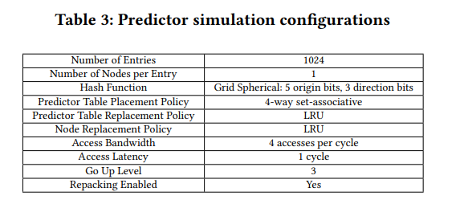
Table 2概述了GPGPU-Sim的GPU配置，Table 3列出了我们模拟的预测器的设置。
Notes:
- “SRAMs”：Static Random-Access Memories。静态随机存取存储器是一种常见的存储器类型，用于存储数据和指令。与
DRAM不同，SRAM是一种易失性存储器，这意味着在断电时会丢失存储信息。SRAM具有快速的读写速度和较低的访问延迟，这使其在需要快速访问的应用中得到广泛应用。 - 可变延迟函数单元是指其执行时间可能因为不同操作而有所不同。
- “LDST”: Load and Store unit，即加载和存储操作。这里是指GPU从内存加载数据（Load）或者将数据存储回内存（store）的操作。
- “复用”：不同的情景或任务之间共享使用同一资源、部件或设备的过程。
RESULTS
Skipping this section…
RELATED WORKS
Skipping this section…
CONCLUSION
在本文中，我们提出了一种光线相交预测器，用于加速光追AO计算。通过在预测器表中存储光线哈希以及对应的光线相交结果的历史记录，我们可以跳过未来光线的BVH遍历。朴素地实现预测器会导致预测器在SIMD中执行的不一致性，因此在预测之后对warp进行repacking，将被预测的光线分开。模拟结果表明，预测器相较于基准RT unit平均实现了26%的加速，并将内存访问减少了13%。
在光线相交预测方面仍有很多令人兴奋的方向可以探索。我们提出的limit study表明，更好的预测器结构可能会有改进空间。此外，在本文中，我们主要关注了AO，它是许多受益于光追的照明效果之一。虽然我们呈现了将预测其拓展到全局光照计算的结果，该计算需要最近的相交点，但还有很多进步空间。探索预测器在动态场景和动画中的应用也可能是一个引人注目的方向。预测器状态可能在帧之间被保留，并且仅对动态元素重新训练预测器。